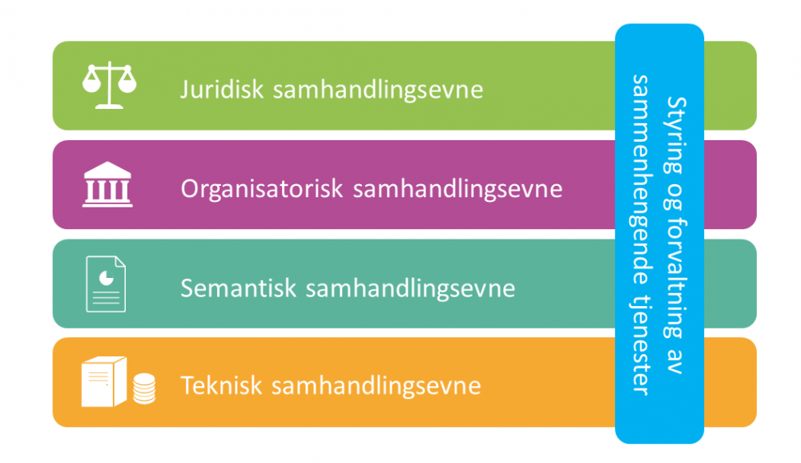
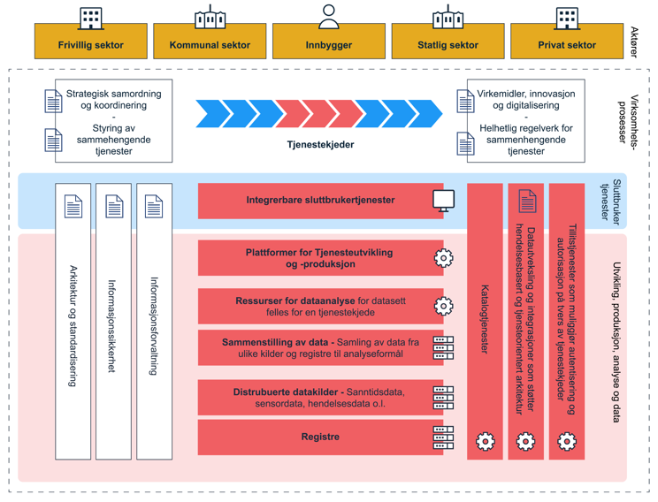
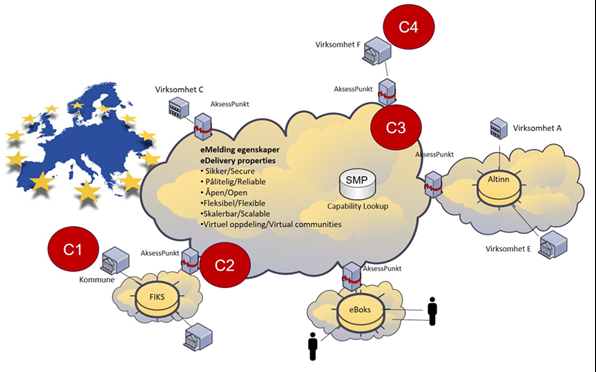
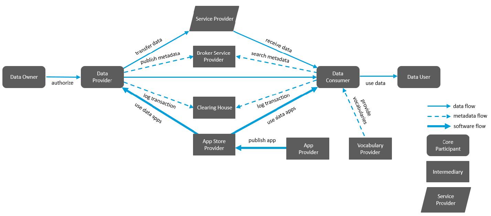
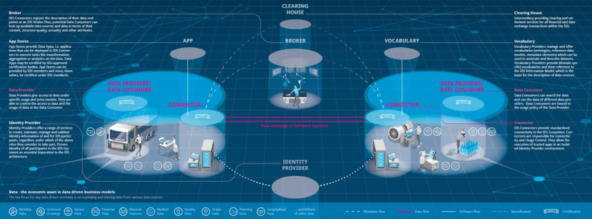
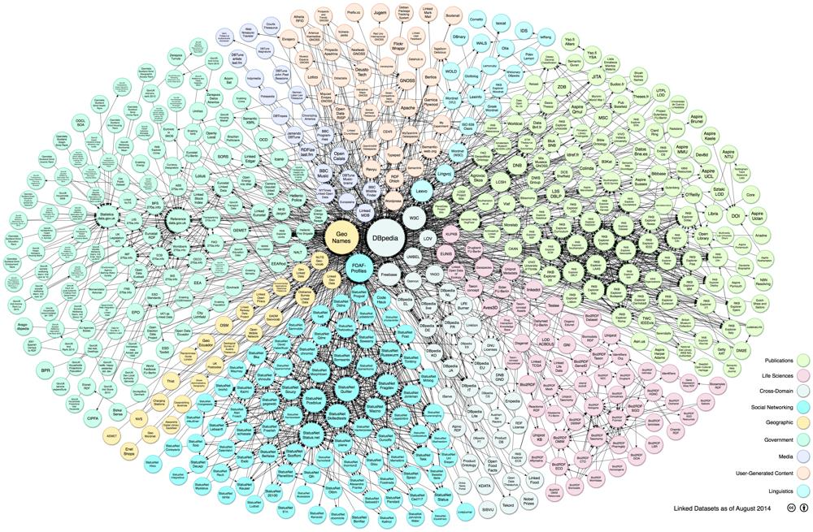
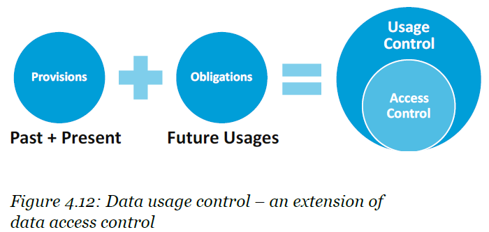

Målbilder for datautveksling
1. Visjoner
Datautveksling med full interoperabilitet på tvers av IT-applikasjoner, organisasjonsgrenser, sektorer, landegrenser og fagdomener.
Innebygget datadeling

2. Bruddstykker av bildet som input til samlet beskrivelse
2.1. Felles økosystem – overordnet målbilde for nasjonal arkitektur
Digdir har nylig tatt fram et overordnet målbilde som per januar 2021 er illustrert gjennom figuren nedenfor.

Her ses «Datautveksling integrasjoner som støtter hendelsesdrevet og tjenesteorientert arkitektur» i sammenheng med «tillitstjenester» for å understøtte samhandling i «tjenestekjeder» på tvers av sektorer og organisasjonsgrenser for å gi sammenhengende tjenester til alle i alle sektorer, inklusive privat sektor.
2.2. Fra eMeldings-strategien: Gateway mellom sektorløsninger
Adad

Morten; Si noe om hvordan i eget domene? Erik: Ja, krav til egenskaper, arkivering, innsyn, etterlevelse
2.7. Arkitektur – dataflyt, roller og tjenester
Merk:
-
Clearing house som tiltrodd tredjepart for logging
-
Dataflyt enten direkte fra provider til consumer, eller gjennom ekstern tjeneste hos Service provider

2.8. Nodes and connectors vs. 4-corner?
Er følgende bilde på en måte 4H-modellen? è Vår løsnng på visjonen i dag = «eMelding»

Vi må komme bort fra behovet for bilaterale avtaler og løsninger og satse på en felles økosystemarkitektur!?
2.11. Data mesh
Domenebasert tilnærming der det finnes noen masterdata kilder … Disse realiserer «domains aligned with the source» i figuren under (fra How to Move Beyond a Monolithic Data Lake to a Distributed Data Mesh

2.12. Linked data og semantiske teknologier
Disse teknologiene ligger i bunnen på referansearkitekturer og målbilder i EU, ref. data spaces (IDSA) og GAIA-X

| STIRdata-prosjektet |
3. Påbegynt samlet beskrivelse av målarkitektur for datautveksling i Norge
3.1. Overordnet konsept basert på Linked Data og Data Mesh
To-do: Konseptskisse der «alt» er blir dataressurser noder i et system av lenkede data, med «innebygget integrasjon».
Frigjør data fra applikasjonene og infrastrukturene!
Kan kutte minst 50% av all applikasjonsutvikling som gjøres i dag!
Foreløpig illustrasjon:
3.2. Arkitektur basert på GAIA-X
Privacy by design, osv.
Datautveksling direkte mellom tilbyder og konsument eller via «mellomledd» (service provider / dataformidler)
Frigjør data fra applikasjonene og infrastrukturene:
Data usage control:
